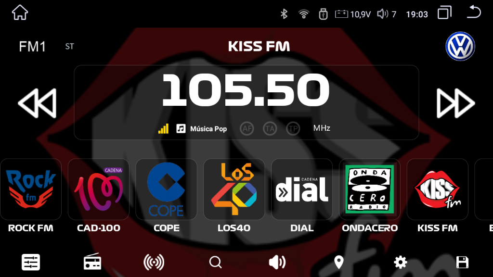
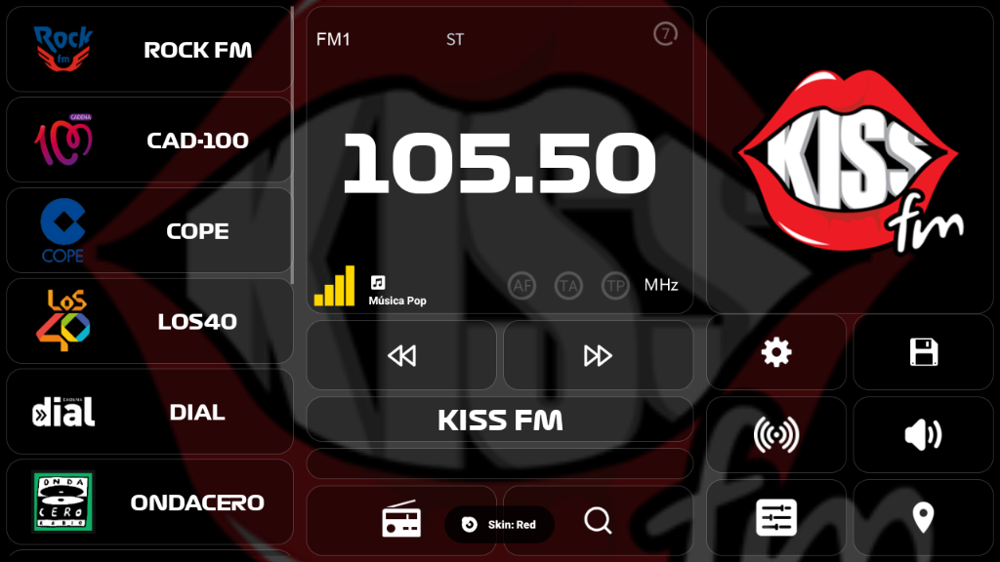

OPENRADIOFM
Tu Radio, Tus ReglasPersonaliza la instrumentación de tu vehículo con potencia de bajo nivel. Extrae firmware, audita RDS y toma el control total. Optimizado para pantallas 1024x600 y superiores.
Características Premium
Personalización extrema para tu radio. Tu estilo, tus reglas.
Logos Personalizados
Edita y gestiona logos de emisoras. Sube tus propios diseños, logos de marca de coche y fondos dinámicos con efecto blur.
Edición RDS Avanzada
Decodificación y edición de datos RDS en tiempo real. Personaliza nombres de emisoras y texto PS/RT con máxima precisión.
12 Favoritos por Banda
Guarda hasta 12 emisoras favoritas por banda FM. Sistema Save/Load para respaldar y compartir tus listas (.fav).
Temas y Tipografías (V5)
Tipografías premium (System, Bebas, Digital, Inter y Orbitron), skins y modo nocturno con tinte azul automático.
Layouts Adaptables
Layout vertical (V2) y horizontal (V3) optimizados para pantallas 1024x600. Diseño glassmorphism con efectos premium.
Crowdsourcing Cloud
Contribuye a la comunidad. La app sube automáticamente datos de emisoras (PI Code/PS) para que todos tengan logos HD actualizados.
12 Idiomas
Interfaz y manuales en Español, Inglés, Ruso, Francés, Alemán, Italiano, Portugués, Rumano, Ucraniano y más.
Control Total
Acceso a bajo nivel para personalización extrema. Menú Premium con ajustes estéticos y funcionales avanzados.
Hackeable
Diseñado para entusiastas que quieren ir más allá del software. Código abierto y modificable.
Interfaz de la App


Presentación V5 & Guía de Logos


Demostración Técnica
Mira la demostración completa de OpenRadioFM v3.0 en acción
▶ Ver Vídeo en YouTubeAgradecimientos al canal de @mekumadrid
Galería de Capturas v5.0

Layout V2 - Night Blue Mode
Interfaz optimizada para conducción nocturna con tonos premium.

Layout V3 - Standard Premium
Máxima visibilidad de RDS y sintonía en alta resolución.
Recursos
Enlaces de Interés
-
💬 Grupo Telegram Android Head Units
Comunidad de radios Android para vehículos
Unirse al Grupo -
🇷🇺 Foro Ruso MT8163
Comunidad dedicada a dispositivos MT8163
Visitar Foro 4PDA -
� Foro Junsun V1/Pro MT8163
Discusiones técnicas sobre Junsun V1/Pro
Visitar XDA Forums
OpenRadioFM en Números
Radio Stock vs OpenRadioFM
| Característica | Radio Stock | OpenRadioFM |
|---|---|---|
| Personalización de logos | ❌ | ✅ Ilimitados |
| Temas de interfaz | ❌ 1 fijo | ✅ 5 premium |
| Idiomas disponibles | ❌ 1 idioma | ✅ 12 idiomas |
| Edición RDS | ❌ | ✅ Completa |
| Layouts adaptativos | ❌ | ✅ V2 + V3 |
| Código abierto | ❌ Cerrado | ✅ 100% Open Source |
Roadmap V.5
El futuro de OpenRadioFM
Completado - V3.0
Layouts adaptables V2/V3, logos personalizados, 5 temas, multi-idioma, sistema de favoritos
Actual - V5.0.0 (Stability Beta)
Estabilidad crítica MTK8259, protección de banda AM, Skin Blanco (Light Mode) y corrección de crashes en MT8163.
100% completado - ¡Beta Pública!
Planificado - V5.1+
Integración avanzada Android Auto, ecualizador DSP pro, modo espectro 60fps y base de datos global mejorada.
Apoya el Desarrollo de OpenRadioFM
Tu donación permite seguir mejorando la app
💛 Donar vía PayPalTu donación ayuda a: ✅ Soporte para más hardware ✅ Nuevas características ✅ Actualizaciones frecuentes
Comunidad y Sugerencias
Tu opinión es importante para mejorar OpenRadioFM
Sugerencias e Ideas
¿Tienes una idea para mejorar la app? Compártela con la comunidad
Proponer IdeaEspecificaciones de Hardware
- Hardware: Compatible con unidades MT8163, K706 y Radio NWD G5 (QS6).
- Resolución: Optimizado para pantallas 1024x600 y superiores.
- Chip de Radio: NXP TEF6686 con soporte RDS completo.
- Firmware: Android 8.1+. Funciona con o sin root (mejor rendimiento con root).